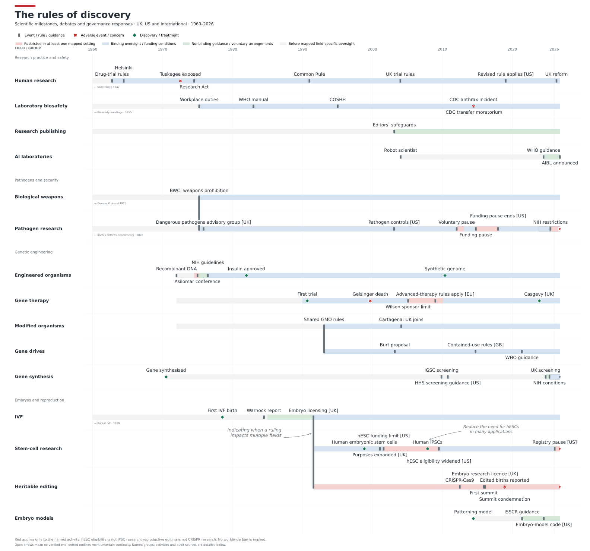

Thoughts on AI biosecurity, discovery, and science's track record of self-regulation
All words here are written by me without AI and views shared are my own.
Recently I attended an informal roundtable event on biosecurity. Although I'm a keen advocate for AI adoption in science, hosting events and workshops, I’ve been starting to understand that it is essential for researchers and the public to understand biosecurity. Attending the event highlighted how diverse the groups views of the risks were. To begin learning about biosecurity, and what is at risk with AI adoption, I compiled a historic timeline biosecurity and biosafety risks in biology.
The timeline follows discovery milestones, and events that changed the regulation and oversight landscape for that discovery. The view is not intended to be extensive, and I limited the timeline to mostly UK and US regulations. I've include AI lab automation as its own timeline.
My expectations going into this were:
- discoveries marred by controversies and risky research become unpopular and progress slowly
- research in fields with strong regulation more slower and lack innovation
- dangerous individuals are a risk to science regardless of regulatory environments
A timeline of discovery and oversight
Explore the figure and sources ↗To the visualisation follows:
- discovery before oversight (grey),
- nonbinding guidance/self-regulation (green)
- oversight (blue)
- ban, voluntary pause or funding restriction (red if instated in least one country (red)
- green diamonds mark illustrative discoveries and treatments.



Key examples (worth detailed follow up)
- The Asilomar Conference on Recombinant DNA (Genetic engineering, 1975). The pausing research to define the regulations. Concerns were raised about biosecurity risks that splicing DNA across viruses and trapping them in the genome of bacteria may infect humans, causing cancer. Paul Berg, who received a Nobel Prize for his contributions to this work, helped organise the Asilomar Conference on Recombinant DNA to develop guidelines with the NIH for this work. Approval and commercialisation of a engineered bacteria-derived insulin in was delivered in 1982.
- Even within periods of funding restrictions, innovations can also occur. The discovery of iPSCs, during a funding restriction hESCs, opened up new fields (personlised medicine) and safer technologies (iPSC-based cell therapy).
- Others discoveries have followed a more trust based approach: IVF moving from voluntary management. While other discoveries have include examples of breaking of rules and trust: CRISPR editing of germline genome of two babies born in China by scientist He Jiankui (Heritability editing, 2018).
AI-Bio's role in biosecurity
AI-Bio's role in biosecurity is not fully answered when viewed as a risk on its won. AI-lab automation is a burgeoning field within "Research practice and safety", and the connection of AI used in biology (including automation) can be viewed a a rapid accelerator that will effect all fields.
Going from the history of science, it appears that biosecurity and biosafety as they have been installed cannot prevent all mistakes, event amongst good-faithed researchers and institutions. As AI increasing enters the lab (https://www.nature.com/articles/d41586-026-03270-1), through consumer frontier LLMs or purpose-built AI-Bio products, high levels of scrutiny is going to be need to ensure AI-driven research is well aligned and safe.
Within this scope of good-faithed research, adoption of tools is needed to build this safer biology research:
- Setting boundaries for materials and products: for example BioBricks (iGEM), where synthetic biology works with predetermined units of defined DNA sequences to prevent creation of dangerous organisms/infections
- AI-Lab automation. Traceable, controlled, and well-governed automated research provides a clear path to accountability in science. Frameworks like Design-Build-Test-Learn (DBTL) are being used in foundries to optimise bioengineering.
- Improved interpretability of AI-Bio models. A good example here is of Goodfire's analysis of the Prima Mente's Pleiades epigenetic foundation model.
- Using AI risk management practices including evaluation of real world effectiveness and incident reporting
- Know Your Customer (KYC) are "laws, regulations and guidelines that require regulated businesses and professionals to verify the identity of a customer". Accountability is needed to trace problems.
Wrap up
Considering the preexisting biosecurity and biosafety risks that already exist today is helpful for framing AI-Bio:
- AI is entering research currently, and has limited safeguards.
- As research accelerates with AI, regulations and guidelines for existing fields will need to be updated to keep up with discoveries.
- It is urgent to implement AI-Bio tools to improve biosecurity in response to AI being used in research